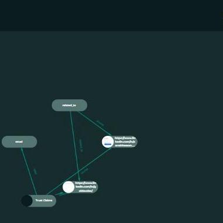

Blockchain & Web3 Developer • Full Stack Engineer
Building decentralized trust infrastructure at LinkedTrust since 2022. Passionate about creating systems where trust is verifiable, credentials are portable, and technology serves people — from ethical investing to civic engagement.
Building decentralized trust — from core infrastructure to real-world applications
Decentralized trust platform enabling creation, validation, and connection of cryptographically signed claims. Build transparent webs of trust across people, organizations, and content.
Core TypeScript SDK for creating, validating, and managing LinkedClaims. The foundation that powers the entire ecosystem — published on npm as @cooperation/linked-claims.
Ethical capital allocation platform grading companies on democratic accountability, worker equity, and environmental responsibility — surfacing simple A-F letter grades at the point of purchase or investment.
GoodBuilders Round 2 — building apps on the GoodDollar/GoodCollective platform. Includes Pesia's Kitchen (community food) and Global Classrooms (education access).
Volunteer recognition badge platform for corporate HR. Issue verifiable OpenBadges v3 badges, track volunteer hours, and generate CSR reports.
Professional credential verification for recruiters and candidates. Build verifiable trust profiles, verify credentials with QR codes, and connect to LinkedIn.
Stateless, serverless endorsement workflow platform. Create skill claims, validate through endorsers, and generate Open Badges v3.0 credentials — W3C Verifiable Credentials v2.0 compliant.
AI-powered claim extraction from PDFs and text using Claude/OpenAI. Automatically identifies claims and publishes them to LinkedTrust. Published on PyPI.
Civic engagement bridge connecting Ghost CMS publishers to Bluesky social network — embedding actionable civic opportunities directly into content.
Python-based data ingestion pipeline for processing, validating, and importing trust claims at scale into the LinkedTrust platform.
Suite of tools for construction cooperatives in America. Multi-stakeholder equity structures, portfolio management, and worker-owned governance tools.
Full-text and semantic resume search powered by PostgreSQL, pgvector, and sentence-transformer embeddings. Upload PDFs, extract text, and find candidates by meaning — not just keywords.
Arizona government transparency project — bringing sunshine to public records and civic data through open technology.
Technologies I work with every day
From Paktia, Afghanistan to building global trust infrastructure
Started contributing to the decentralized trust ecosystem, working on the core platform and frontend.
Took on more projects — GoodDollar apps, data pipelines, and backend services.
Working across Alonovo, Certify, Talent, and multiple credential verification platforms.
SkillsAware client delivery, CivicSky civic tech, Streetwell cooperative tools, and growing the LinkedTrust ecosystem.
Building AI-powered resume search with pgvector/NLP, AT Protocol integrations, SimpleTip micro-payments, and scaling the team's open-source footprint.
Interested in working together? Let's connect.